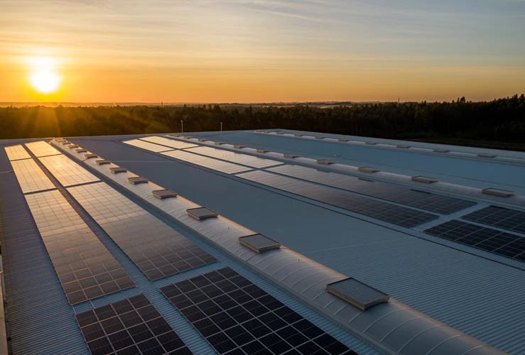
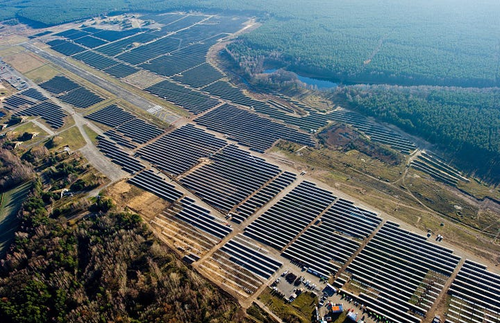
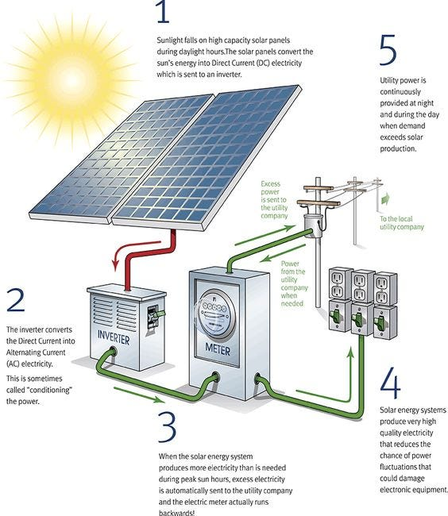
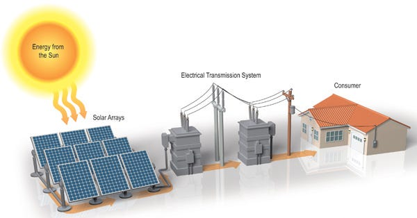
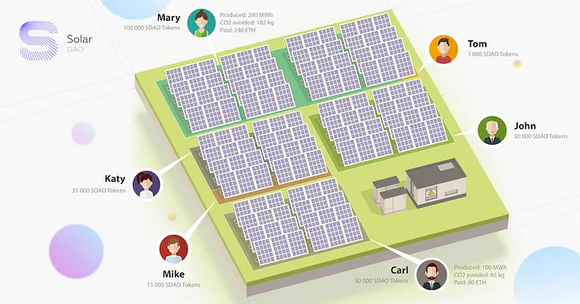

Solar Power is a sustainable source of power in which technology is used to exploit the energy from the sun. Such power is free from pollution and doesn’t lead to the emission of greenhouse gases during its generation and solar power usage.
Solar power is a clean & replenishable power that is abundantly available across the year. A solar energy plant harnesses the sunlight for solar power generation.
Notably, the sunlight is bountiful and inexhaustible, and we can utilise it to power up our homes and business premises.
Considering on a large scale, a solar energy plant uses diversified techniques for solar energy generation via the natural source of heat, i.e., the sun. It minimises the dependence on fossil fuels & other conventional energy sources.
A Solar Power Factory is a photovoltaic (PV) power station, also called a solar farm or solar power plant. In this, there is a large-scale system of PV power. It is a grid-connected system intended for the commercial supply of solar power.
The solar energy generation in a solar power factory is different from the domestic & decentralised solar power systems. They supply power at the large-scale or utility level other than to a local user(s).
For those who think the journey to going solar ends once the rooftop solar power panels are installed, we have some news for you! There’s no doubt solar energy systems are low maintenance, reliable energy sources But like anything else, components of a solar system can occasionally malfunction. Solar monitoring helps one find potential malfunctions and fix them before they significantly impact solar production and electricity bills.
This article explains what happens with the energy generated by PV solar plants: from the solar cells to final consumers through the grid.
PV solar plants generate energy by using the photo-effect that converts sunlight into electricity. As different from home-based rooftop solar systems, they usually operate on a larger scale and for the purpose of selling the electricity generated from panels to industrial or public customers.
In general, there are several options of how energy distribution can be organized in the case of solar energy generation. The first one is the prosumer model we have written about before. Essentially, this model is suitable for individuals or small businesses that operate their own small-scale solar energy facilities, like rooftop-based PV solar systems. In this model, the direct producers consume solar energy generated in-house, and sell the excess to the grid or exchange for tradeable commodities, including, inter alia, special cryptocurrencies.
Formerly, some other schemes have been used to distribute the energy from PV solar plants. For example, in the early stages of the industry development, PV solar energy producers used to exchange energy for green certificates that were then sold to legal entities (companies and organizations).
Besides direct production / in-house consumption (prosumer model), and distribution via the market mechanism (with the help of certificates), energy can be transmitted to the clients by means of non-market distribution systems. This is the case of PV solar plants that sell energy to the grid or intermediary companies that operate the grid before it reaches the direct consumers.
The income of a solar plant derives from the sales of electricity to the grid, and its output is metered in real-time on a half-hourly basis (or similar period) in order to balance the settlement in the market for electricity.
1st tokenized fund for funding PV solar plants and RES projects across the globe. Join us at: https://solardao.me